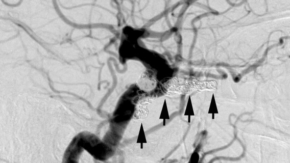

( of )
Correct: 0
Incorrect: 0
A 50 year old woman developed double vision, pain behind her right eye, and redness of that eye.
What caused these abnormalities?
Correct!


A widened cavernous sinus is another imaging clue, but full demonstration of the fistula requires digital angiography.
Most likely this patient has the “dural” variety of fistula, which often occurs post menopausally (and post partum) in the face of a drop-off in blood estrogen and progesterone. The indications, timing, and technique for dural fistula repair are debated. In this patient, the fistula was successfully closed with coiled implanted in the cavernous sinus.

You might not have jumped to this diagnosis without excluding an orbital process, but orbital cellulitis is uncommon in adults and generally does not cause a complete abduction deficit, as you see here.
Graves disease typically shows bilateral congestive ocular signs. Cavernous sinus thrombosis is an unusual condition. Far more likely is a carotid-cavernous fistula. By diverting arterial blood away from the sixth nerve, it can produce an ischemic palsy. The conjunctival hyperemia, with prominent loops at the limbus, is suggestive of orbital venous congestion. It arises from retrograde venous flow under abnormally high pressure precipitated by “arterialization” of the orbital veins. The patient also had high intraocular pressure. Imaging showed an enlarged superior ophthalmic vein, a key indicator of fistula.
Incorrect
Incorrect
Incorrect